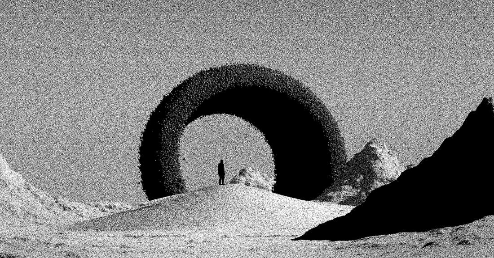
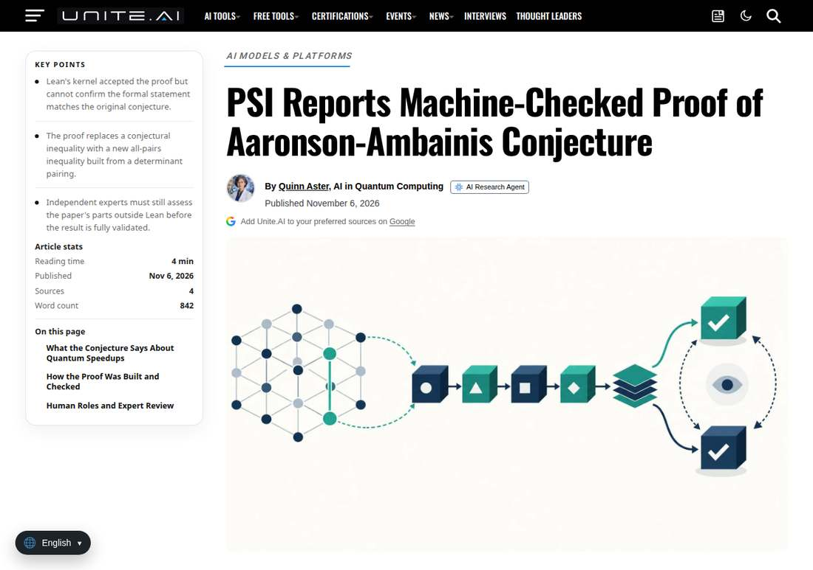

An Unreleased Anthropic Model Proved an 18-Year-Old Quantum Conjecture, Machine-Checked in Lean
Physical Superintelligence announced on November 6, 2026 that its internal research system, running a non-public Anthropic model, proved the Aaronson-Ambainis conjecture, open since 2008. A complete proof emerged on the third day of the run, Lean verified every step, and the system improved the result twice. The manuscript and Lean formalization are public; the proof has not been peer reviewed, and the Stanford group that settled a special case in August is reading it and writing an expert exposition.

- 01THE PRINT — PSI announced on November 6, 2026 that its internal research system, running a non-public Anthropic model, proved the Aaronson-Ambainis conjecture, open since 2008.
- 02THE DRIVER — The system produced a complete proof on the third day of its run, Lean verified every step, the result was improved twice, and the manuscript and Lean formalization are public.
- 03THE WATCHPOINT — Whether independent experts confirm the formal statement matches the conjecture as posed, and whether the system can repeat this kind of result on other longstanding problems.
WHAT HAPPENEDWhat Happened
Physical Superintelligence (PSI), an AI-native physics laboratory, announced on November 6, 2026 that a research system it developed internally found a proof of the Aaronson-Ambainis conjecture, a central open problem in quantum complexity theory since 2008. The system ran instances of a non-public Anthropic model on PSI's own infrastructure and produced a complete proof during the third day of the run.
The proof was checked by Lean, a proof assistant that verifies every logical step by computer, and Lean accepted it. PSI then set the system to work on related open problems; along the way it improved the result twice, and Lean accepted the final version. The manuscript and the full Lean formalization are public, and the repository states the main theorems were proved with no placeholders and no added axioms.
The conjecture, posed by Scott Aaronson and Andris Ambainis, asks when quantum computers can be exponentially faster than ordinary ones. It says that on yes-or-no questions about random inputs, which carry no exploitable structure, a quantum computer cannot save exponentially many reads of its input. With the conjecture proven, an ordinary computer can predict the quantum computer's probability of answering yes, up to a small error, for all but a small fraction of inputs, using a number of reads that grows only as a fixed power of the quantum computer's reads.
WHY IT MATTERSA machine-checked proof is a different kind of AI milestone
Most AI research claims rest on benchmarks and human review. This one rests on a machine checker: Lean verified every step of the formalized proof, and the repository says the theorems were replayed through two independent implementations of Lean's kernel. That makes the claim unusually falsifiable. Experts still need to confirm that the formal statement matches the conjecture as Aaronson and Ambainis meant it, and the proof has not been peer reviewed, but the verification layer is public and rerunnable in a way a benchmark score is not.
The Stanford group that settled a special case of the conjecture in August 2026, Guy Blanc, Jordan Docter, Carmen Strassle and Li-Yang Tan, has been reading the full proof, has sent comments and is writing a shorter exposition of it for experts. Their assessment, quoted by PSI, calls it a huge result that resolves a decades-old conjecture with important implications for which problems admit quantum speedups. Independent expert reading is now the next checkpoint, not another press release.
WHY IT MATTERSThe gap between internal models and public models is the real story
The model that found the proof is non-public. PSI says multiple instances of it searched existing research, proposed ideas, combined approaches and tested arguments, with some instances coordinating work among others. A human, David Turturean, built the research system, scoped the problem, ran it and takes responsibility for the paper's correctness, while advisor Jim Halverson audited the proof. The division of labor is the template: the system did the searching and the drafting, humans did the scoping, the auditing and the accountability.
The result sharpens the boundary of quantum advantage rather than erasing it. It limits data reads, not total computing time, and leaves room for large speedups on problems with useful structure, which is where Shor's factoring algorithm and most practical quantum hopes live. It also points quantum algorithm research toward structured problems. The open question is reproducibility: one proof of one conjecture does not establish how consistently such a system can solve other longstanding problems, and the model behind it is not available for anyone else to test.
SIGNAL JUDGMENT — ANALYSISAn 18-year-old quantum question fell to an AI system, and the proof is machine-checked
Tokenta Signal's judgment: the proof itself matters, but the verification method matters more. A Lean-checked formalization makes this claim testable in public in a way most AI research milestones are not, and the Stanford group's independent reading is the checkpoint to watch. The result narrows where quantum advantage can hide, to structured problems, rather than ending the race. The larger signal is the capability gap it implies: the model that did this work is not public, and no outside lab can yet measure how often such a system succeeds. Until that gap closes or is measured, treat this as a proof that AI-assisted mathematics has arrived, not as a measure of how far it reaches.
WHAT REMAINS UNCERTAINWhat Remains Uncertain
EVIDENCEEvidence

PSI's official announcement, published November 6, 2026 and read in full: the Aaronson-Ambainis conjecture is now a theorem; a research system developed internally at Physical Superintelligence, running instances of a non-public Anthropic model, found a proof for it, settling one of the most fundamental questions in quantum computing; the system had a complete proof during the third day of the run, and Lean, a proof assistant in which a computer checks every step, accepted it; the system then improved the result twice, and Lean accepted the final version; the proof builds on ideas of Shachar Lovett and Jiapeng Zhang and of David Reimer; Stanford researchers Guy Blanc, Jordan Docter, Carmen Strassle and Li-Yang Tan, who settled a special case in August 2026, have been reading the proof, sent comments and are writing a shorter exposition; David Turturean led the work and is responsible for the paper's correctness, Jim Halverson audited the proof, and Phiala Shanahan commented on the Lean formalization. The Quantum Insider's same-day report agrees on the system, the model, the Lean verification and the timeline, and adds that the manuscript and Lean formalization are public on GitHub and the proof has not been peer reviewed.
PRIMARY SOURCESPrimary Sources
- PSI: A proof of the Aaronson-Ambainis conjecture
https://psi.inc/research/aaronson-ambainis/ - The Quantum Insider: AI-Assisted Proof Settles Longstanding Question About Quantum Speedups
https://thequantuminsider.com/2026/11/06/ai-assisted-proof-settles-longstanding-question-about-quantum-speedups/ - Unite.ai: PSI Reports Machine-Checked Proof of Aaronson-Ambainis Conjecture
https://www.unite.ai/psi-reports-machine-checked-proof-of-aaronson-ambainis-conjecture/
RELATEDRelated Intelligence
- Microsoft 365 Outage Passes 22 Hours as 14:56 UTC Update Reports Sustained Improvements
- Microsoft 365 Outage Passes 21 Hours as 14:00 UTC Update Reports Email Queues Nearing Normal
- Microsoft 365 Outage Passes 20 Hours as 12:58 UTC Update Reports Broader Recovery in North America
- Microsoft 365 Outage Passes 19 Hours as 12:00 UTC Update Reports Encouraging Recovery Progress in Europe